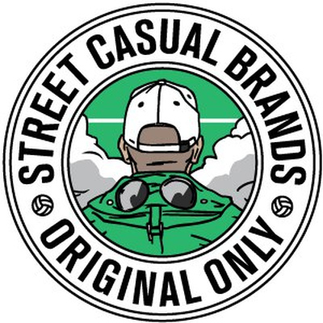
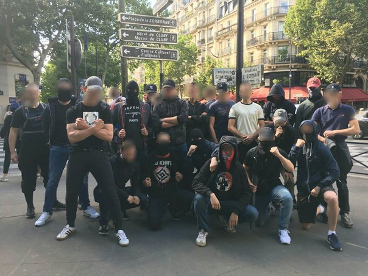
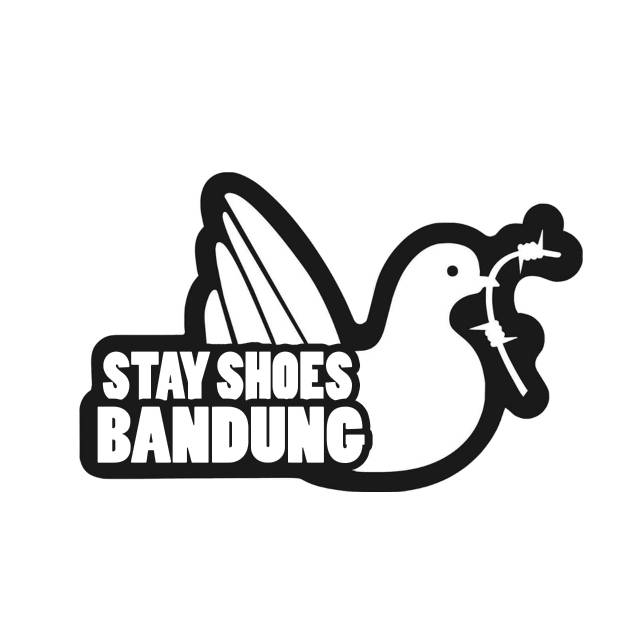

<!DOCTYPE html>
<html>
<head>
<style>
body {
  background-image: url("ava.jpg");
}
</style>
</body>
</html>
<html>
 <head>
  <title>header</title>
  <meta charset="utf-8">
 </head>
 <body>
  <header>
   
   <p><font size="6" color="#FFFFFF" face="serif">Добро пожаловать на сайт</font></p>
  </header>
  <main>
   </header>
    <link rel="stylesheet" type="text/css" href="/assets/css/style.css" />
    <link rel="icon" href="/img/favicon.png" />
    <script
      type="text/javascript"
      src="https://code.jquery.com/jquery-latest.min.js"
    ></script>

    <!--[if lt IE 9]>
      <script src="http://html5shiv.googlecode.com/svn/trunk/html5.js"></script>
    <![endif]-->
  </head>
  <body>
    </header>
    <main>
      <section>
        <p><font size="6" color="#FFFFFF" face="serif">Тема:Стиль кэжуалов</font></p>
      <p><font size="6" color="#FFFFFF" face="serif">От чего произошли кэжуалы</font></p>
      <nav>
        <ul>
          <li>
            <p><font size="6" color="#FFFFFF" face="serif">Стиль кэжуал произошёл от движения футбольных фанатов Великобритании в 70-х годах прошлого века</font></p>
          </li>
          <p><font size="6" color="#FFFFFF" face="serif">Фанаты старались выделяться из толпы, одеваясь особым образом. Со временем их стали называть «Casuals» или «бродяги». Молодые люди предпочитали рубашки поло, джемперы, кроссовки, джинсы и куртки-парки.</font></p>
        </ul>
      </nav>
    </header>
    <main>
      <article>
        <section>
        <p><font size="6" color="#FFFFFF" face="serif">Стили</font></p>
          <p><font size="6" color="#FFFFFF" face="serif">Внутри стиля casual есть ответвления. Самые известные - Sport
            Casual, Smart Casual, Casual chic. Последние два как раз близки
            «городскому стилю», и редко от него отделяются. — одежда между
            спортивным стилем (собственно, одеждой для тренировок) и
            повседневным — как раз «спортивная одежда для парка»,
            оклоспортивная, сочетание спортивных вещей с повседневными, более
            «приглаженная», чем просто спорт. — сплав повседневного стиля с
            классикой.</font></p>
          
      </section>
    </main>
    <aside></aside>
    <title>footer</title>
  <meta charset="utf-8">
 </head>
 <body>
  <footer>
  <p><font size="6" color="#FFFFFF" face="serif">Copyright © <time datetime="2018">2018</time</font></p>
      Black Mesa Research Facility</p>
   <address>New Mexico, USA.</address>
  </footer>
 </body>
</html>
<header>
    
